PPL Progress
FAA自家用操縦士（Private Pilot）学科試験のための学習ダッシュボードです。このガイドでは、アプリのすべての操作をデモ版の画面とともに順を追って説明します。初期設定の目標は60問の試験で85%です（合格ラインは70%）。
01はじめに
アプリはブラウザで動く1つのHTMLファイルです。インストールもサーバーもアカウントも不要です。
- 個人版（
index.html）：実際の学習履歴。端末間の同期は任意です。 - デモ（
demo.html）：1年分の架空データ、サンプルのプラン、ガイドツアー付き。デモは別の保存領域を使い、あなたのデータには一切触れません。 - タブ：Dashboard（日々の学習）、Plan（プランのカレンダー）、Practice tests、Statistics。
- 上部：同期チップ、言語の旗（英語・ポルトガル語・日本語）、設定の歯車、そしてこのガイドを開くボタン。
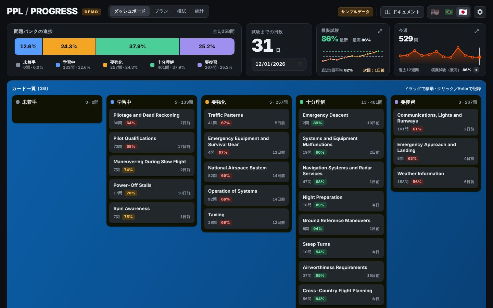
データはすべてブラウザに保存されます。別の端末に移すには同期か、設定のバックアップを使ってください。
02ダッシュボード
今の状態をひと目で：問題バンクのどこにいるか、今日何を学ぶか、各トピックの記憶がどれだけ残っているか。
問題バンクの進捗
バーは1,058問をカンバンのリストごとに分けて表示します。色ごとに1つのリストで、凡例に各リストの問題数と割合が出ます。
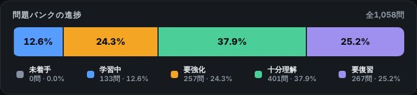
カウントダウン、模試、学習量
- Exam countdown：試験までの日数。すぐ下の欄か設定で日付を変更できます。
- Practice tests：最新スコア、最高スコア、直近3回の平均、次の模試の予定。
- This week：今週解いた問題数と直近12週。⤢で3日から全期間までの詳しい学習量を表示します。
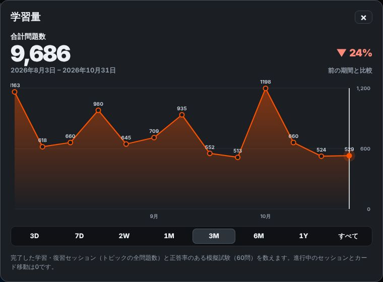
カンバンと学習記録
トピックごとに1枚のカードがあり、5つのリストに分かれます：To Do、Doing、Not Comfortable、Very Comfortable、To Review。カードの数字はそのトピックの最新スコアです。
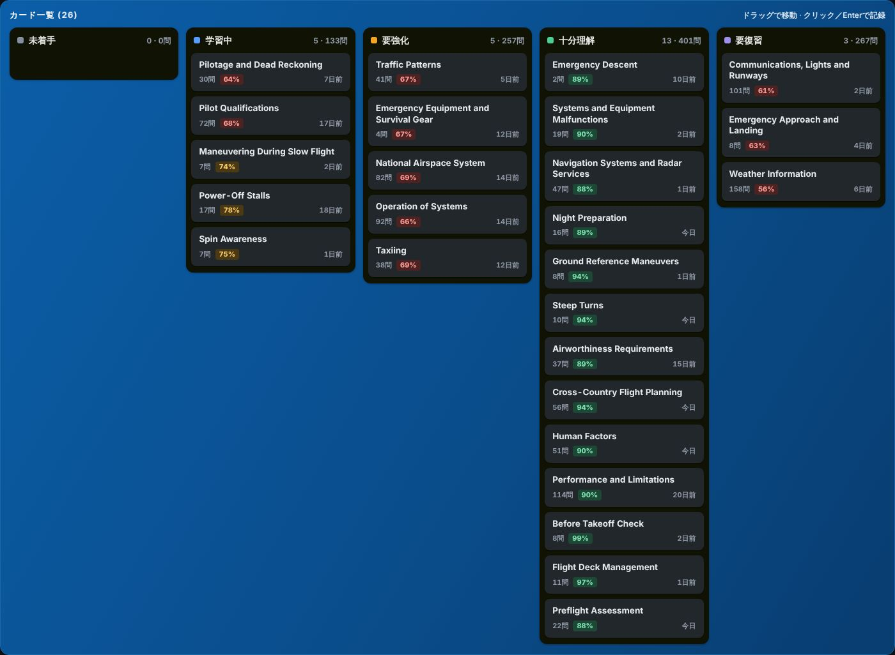
カードを移動：マウスでドラッグ、タッチでは長押ししてドラッグします。ほかのカードが横にずれて場所が開き、カードは離した場所にそのまま入ります：別のリストでも、同じリストの新しい位置でも。順番は保存され、同期されます。変更のたびにUndo付きの通知が出ます。
学習を記録：
- カードの名前をクリック（または選択してEnter）。
- Studied（初回）、Reviewed（復習）、Status only（リストの変更のみ）を選びます。
- スコアを入力します。まだ途中なら空欄のままで：開始として数えますが、記憶モデルには入りません。
- 必要ならリストと日付を調整し、Saveをクリック。
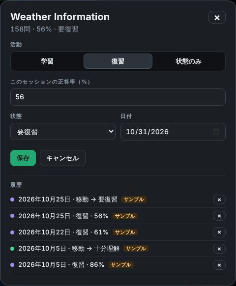
スコアだけ直す：カードの色付きの数字をクリックし、入力してEnter。最後の記録のスコアが更新されます。
カレンダー
各日に学習・復習・模試が表示されます。WKの列は学習した週を示し、下の数字は現在の連続記録です。日をクリックするとその日のまとめが出ます。
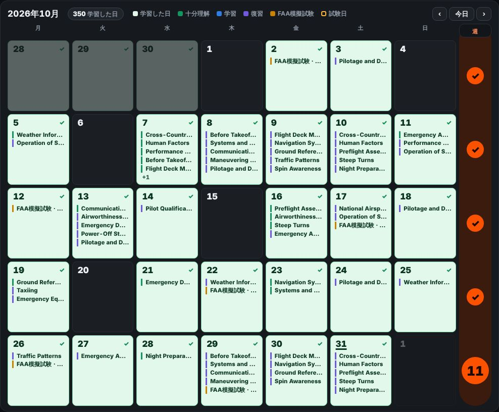
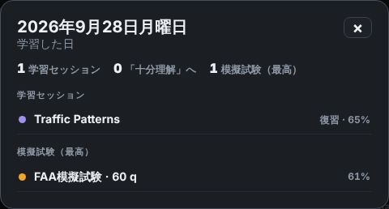
予測、間隔反復、今日の計画
- Exam forecast：試験の予想スコアと、合格・目標のライン。クリックすると最も失点の多い3トピックが出ます。
- Spaced repetition：1つのトピックの記憶曲線。3秒ごとに今日の計画のトピックを順に表示し、マウスを乗せると止まります。カードにマウスを乗せるとそのカードの曲線が出ます。
- Today's plan：今日学ぶこと。タイトル横のタグが出どころを示します：Daily plan、Weekly plan、または提案のエネルギー。丸をクリックすると完了になります。
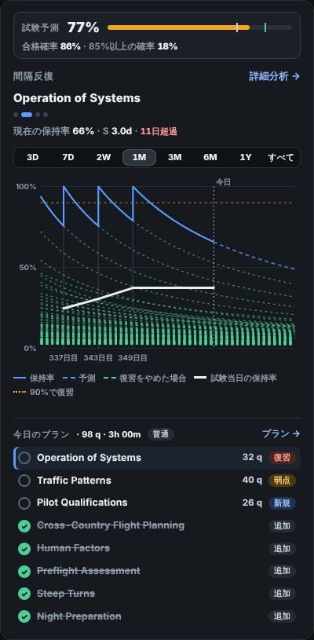
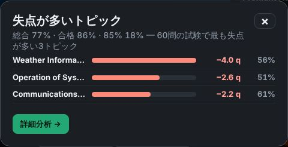
クイック記録
- ⌘K（Mac）かCtrl K、またはテキスト欄の外で/を押します。
- トピック名の一部を入力します。
- Enterで学習、⇧ Enterで復習として記録、⌥ Enterでカードを開きます。Escで閉じます。
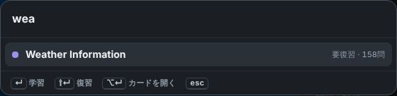
03プラン
Planタブは学習カレンダーです。時間のブロックを確保すると、アプリが適切なトピックを入れ、保存前に調整できます。
週の表示
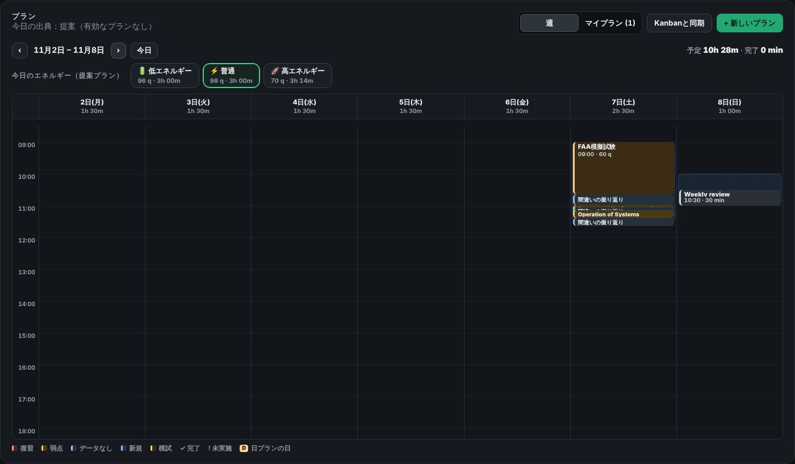
- ‹ ›で週を切り替え、Todayで今週に戻ります。
- 右側：その週の計画時間、実績、逃したブロックの数。
- 各ブロックには時刻、トピック、問題数が出ます。色は理由を示します：復習、苦手、データなし、新しい内容、模試、間違いの振り返り、自分の活動。ブロックをクリックするとそのトピックの記録が開きます。
- 日のプランから来た日にはDの印が付きます。
- 今日に有効なプランがないときはToday's energyが出ます：低・中・高で今日の提案の量と順番が変わります。
- 金曜日以降、来週のプランがなければ計画を促す通知が出ます。
今日の計画の出どころ：まずその日に有効な日のプラン、なければその週の有効な週のプラン、それもなければ統計からの提案。
プランを作る
+ New planをクリックします。4つのステップがあります。
- 種類。Daily plan（1日）かWeekly plan（月曜〜日曜）を選びます。日付か週を選び、必要なら名前を付けます。
- 時間ブロック。日の上でクリックして下にドラッグすると、15分単位で時間を確保します。ドラッグは始めた日にとどまり、マウスが別の日にずれても変わらず、離すと止まります。確保済みの時間の上をドラッグすると削除します。タッチでは開始、次に終了をタップ。Undo / Redo、Clear、Copy … to the other daysも使えます。
- トピック。アプリが各ブロックで学ぶ内容を提案します。確認して調整します（下記参照）。
- 確認。週の様子を見てSave & activateかSave without activatingをクリック。
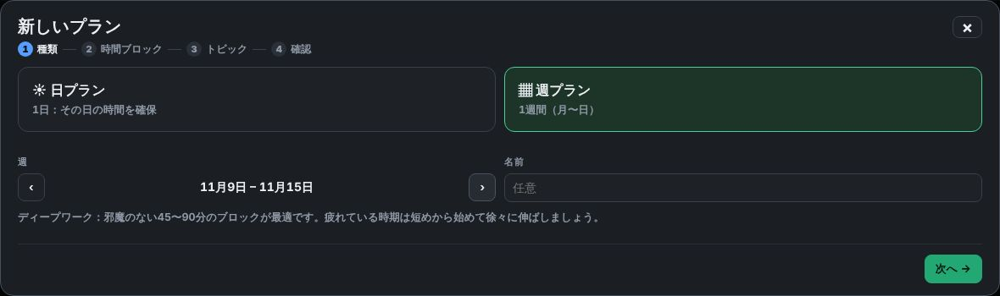
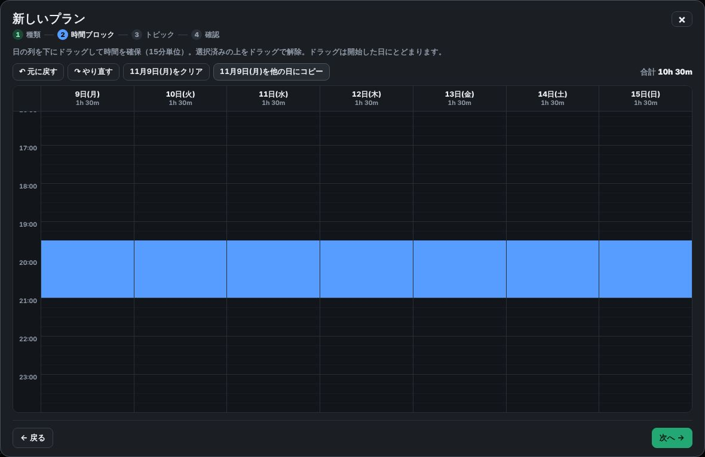
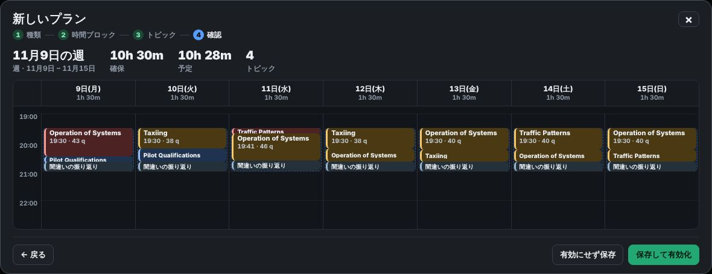
トピックの選び方。各ブロックは、1問にかかる時間（あなたの速さ、トピックの難しさ、間違いを見直す時間）を考えて、試験当日にできるだけ多くの問題を守れるように埋められます。ブロック内では最も難しいトピック、または最も長く復習していないトピックが先に来ます。話題の切り替えを減らすため、1ブロックに入るのは約45分ごとに1トピックまでです（ディープワーク、変更可）。週のプランでは、各日はそれ以前の日が完了したものとして考えます：月曜の復習は火曜に戻ってきません。
間違いの振り返り。各トピックの直後に、そのトピックの間違いを見直すError reviewが入ります。問題バンクでカテゴリーを終えるとすぐにその間違いが表示されるのと同じ流れです。ブロックの振り返り時間は、そのブロックで予想される間違いに合わせます：問題数 ×（1 − 正解の確率）× 難しさ × 1問あたりの見直し時間を5分単位に丸め、最短10分、最長でブロックの4分の1、予想される間違いが3問未満なら振り返りはありません。その時間を、各トピックの予想間違い数に比例して5分単位で分けます。取り分が5分未満のトピックには振り返りが付きません。各振り返りの行には、そのトピックの予想間違い数（例：「予想される間違い 8 問」）が出ます。すべてを同じブロックに収めるため、アプリはまず最もやさしいトピックを短くします。模試や短くできないトピックがブロック全体を占めるときだけ、振り返りは1つの項目として次のブロックの最初に移ります。20分以上余れば別のトピックを追加し、10分未満のトピックは作りません。
ステップ3での編集：
- カードをドラッグして移動：パソコンではどこをつかんでも、スマートフォンやタブレットではつまみ⠿を使います。同じ日のカードの間に落ちる場所が開き、離すと時刻が並び直します。トピックは間違いの振り返りと一緒に動きます。
- カードをクリックまたはタップして編集：問題数の変更、別のカテゴリーや模試の選択、自分の名前の入力（例：「理論：前線」）ができます。×で削除し、トピックを削除するとその振り返りも削除されます。
- 空き時間の+ add：トピック、模試、またはYour own activity（名前と分数、例：「シミュレーター」「教材の見直し」）を追加。
- 各日のエネルギー（低・中・高）でその日の提案を作り直します。Suggest againですべて作り直します。
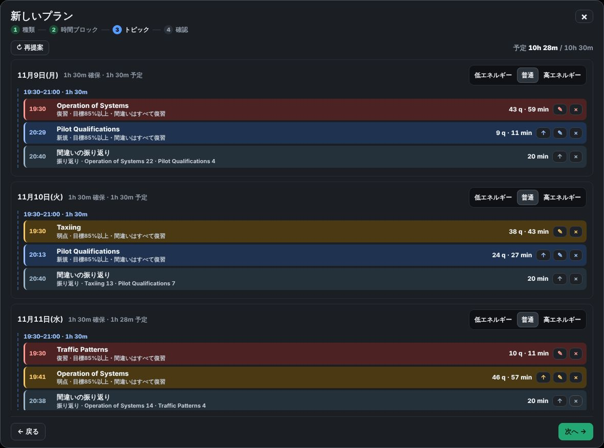
有効なプランの置き換え。有効な週のプランの上に日のプランを作ると、その日だけ置き換えるか確認します。同じ週に別の週のプランを作ると、週を置き換えるか確認します。キャンセルすると何も保存されません。
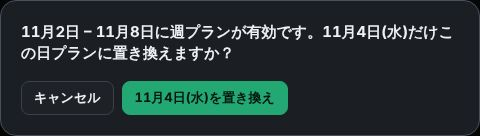
マイプラン
My plansタブにはすべてのプランが並び、有効なものが先に来ます。各プランには：
- View：読み取り専用で開きます。
- Edit：保存したトピックごと、時間ブロックの画面で開きます。
- Activate / Deactivate：有効・無効を切り替えます。別の有効なプランを置き換える前に確認します。
- Copy to next week（週のプラン）：同じブロックで1週間後の新しいプランを作り、新しいトピックを提案します。
- ×：削除（元に戻せます）。
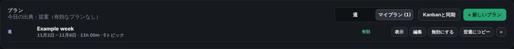
カンバンと同期
カンバンが勝手に変わることはありません。Sync with Kanbanは、カンバンを今日の計画に合わせるとどう変わるかを表示します：
- 今日の計画にあり別のリストにあるトピックはDoingへ移ります。
- Doingにあり計画にないトピックは元のリスト、またはTo Doに戻ります。
不要なもののチェックを外し、OKをクリック。1回のUndoですべて元に戻せます。
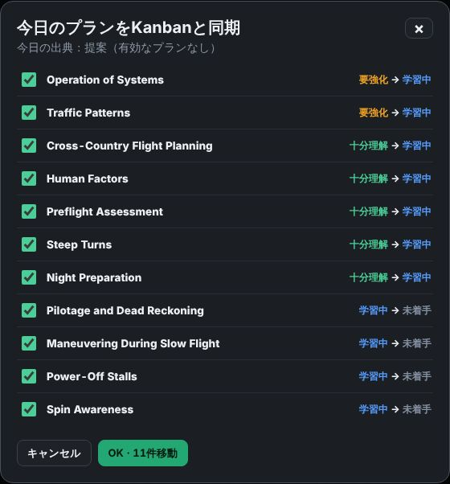
完了と未実施
計画のトピックは、その日にそのトピックを記録すると自動で完了になります。自分の活動は丸をクリックして完了にします。過ぎた日に終わらなかった項目は未実施として表示され、そのトピックは次の提案で優先されます。プランが自動で組み替わることはありません。
04模試
FAAの模試は常に60問です。このタブでは数値、傾向、全一覧を表示します。
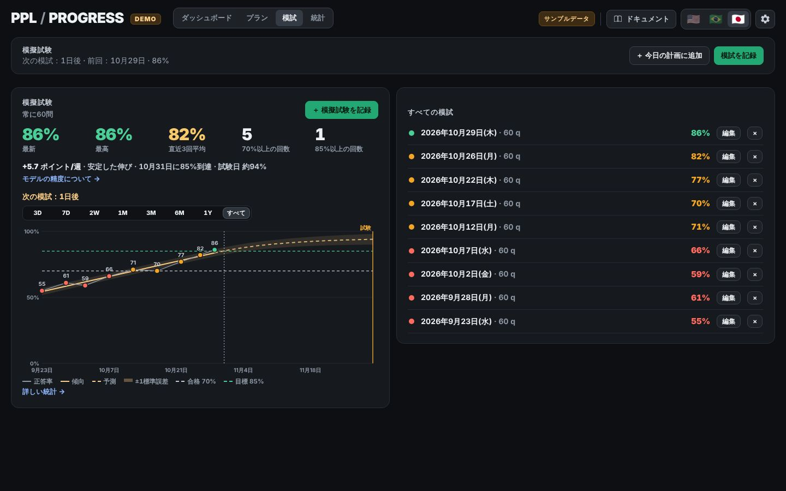
- Log a practice test（または+ Log practice test）をクリック。
- スコアを入力します。模試が途中なら空欄のままで。
- 日付を調整して保存。後で直すには一覧のEditを使います。
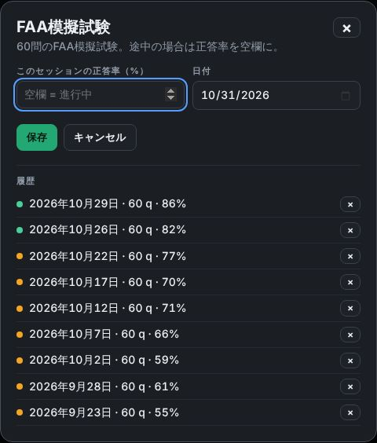
- 次の模試：上のパネルに次の予定が出ます。N日ごとに提案され、学習しない日が続くと早まります。+ Add to today's planで今日の計画に模試を入れます。有効なプランがあれば、入る最初の空き時間に入ります。
- 傾向：結果を通る直線、試験日までの予測、目標に届く日。
- 何日も途中のままの模試には通知が出るので、完了するか削除してください。
05統計
問題バンク
- Question-bank model：今日の予想スコア、合格の確率、目標に届く確率、復習をやめた場合の試験日のスコア。グラフは3日から全期間まで。
- Where you lose the most questions：60問の試験で最も失点の多いトピック。
- Needs recall：3秒ごとに、今日の計画のトピックの曲線を緊急度の高い順に表示。点をタップするとそのトピックへ。
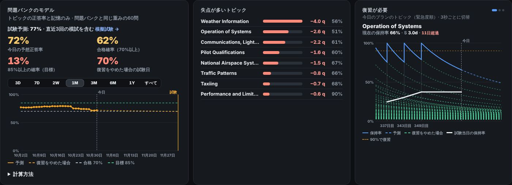
- Heat map by topic：トピックごとに1マス、今日の正解の確率を冷たい順から熱い順に。カードをクリックすると日・週・月ごとの履歴がフィルターとホバー付きで出ます。
- Study volume：常に表示。合計、前の期間との比較、期間の切り替え。
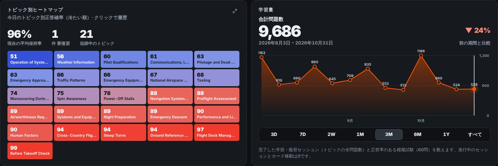
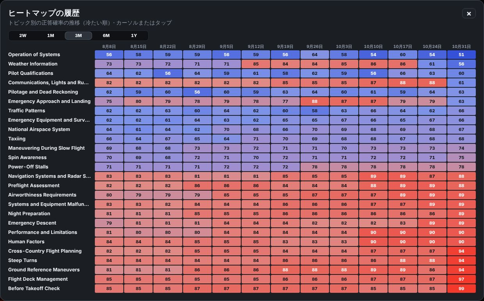
トピックのカード：下には記録のあるトピックごとにカードがあり、現在の記憶、安定度、次の復習、学習回数、最新スコア、曲線を表示します。Dueやリストで絞り込み、グラフの期間を選び、Log a reviewを使えます。
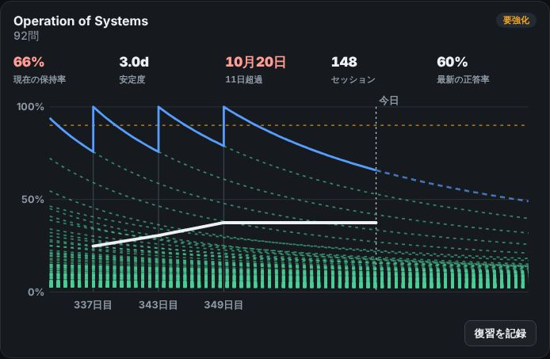
模試
模試からの予測（最近の模試の加重平均）、傾向、スコアのヒストグラム、詳しい予測（合格と目標到達の確率、合格回数、安定度）、そして実際の模試と比べたモデルの精度。
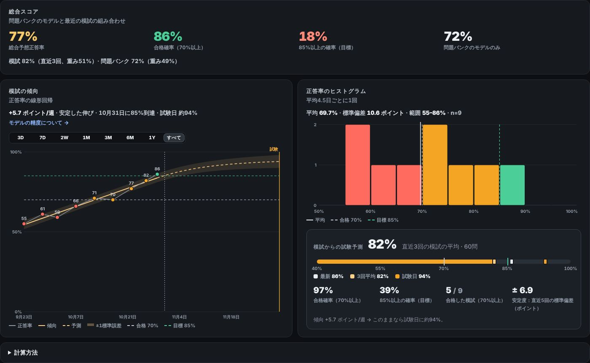
06設定
上部の歯車で設定を開きます。変更はすぐに反映され、同期とバックアップに含まれ、通知から元に戻せます。初期値はアプリ本来の動作です。
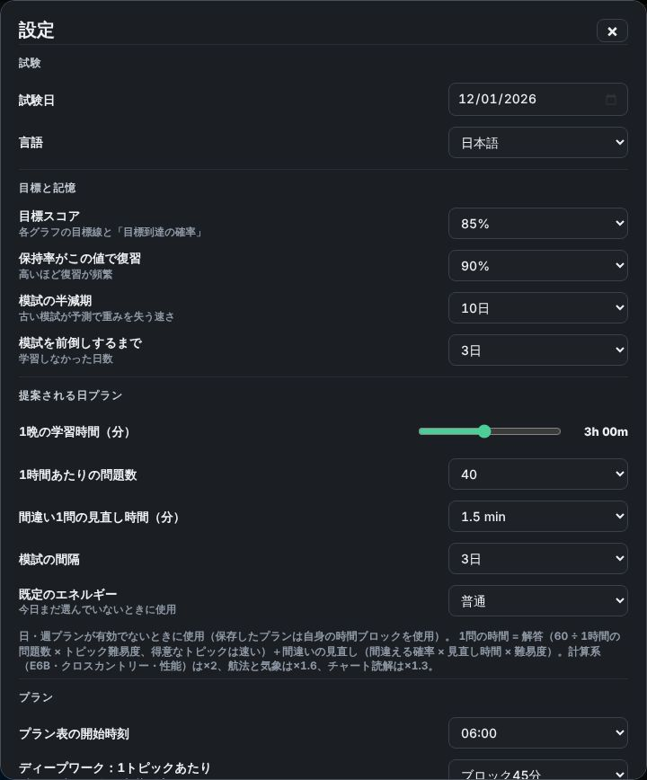
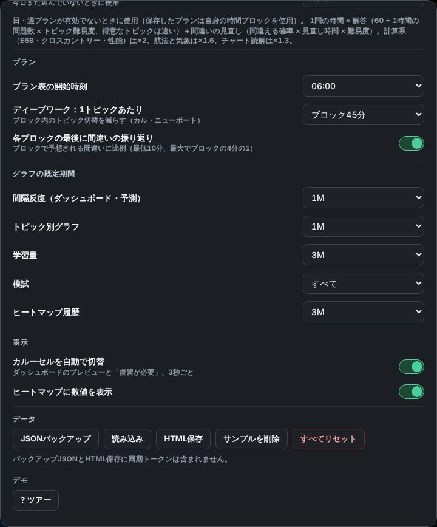
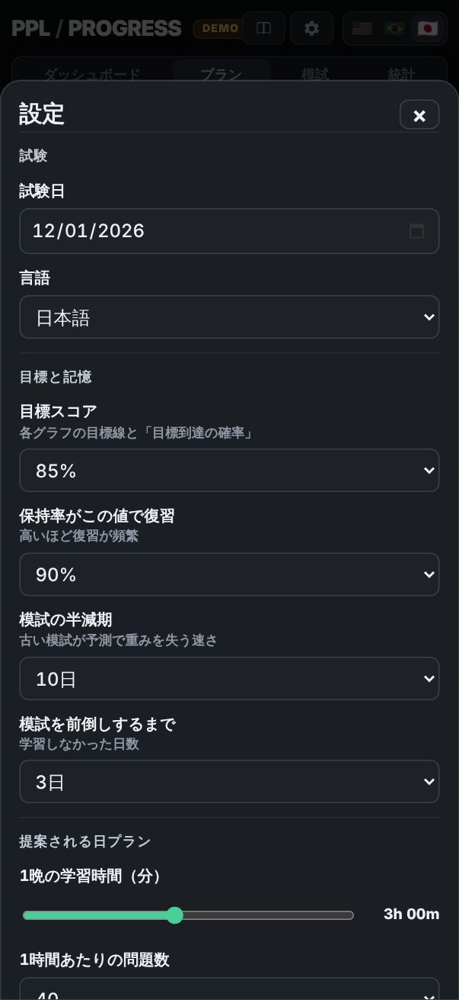
| 設定 | 変わること | 初期値 |
|---|---|---|
| Exam date | カウントダウン、予測、グラフの終わり。 | — |
| Language | 英語、ポルトガル語、日本語。 | English |
| Goal score | すべてのグラフの目標ライン、「目標に届く確率」、必要な正解数（85% = 60問中51問）。 | 85% |
| Review when recall falls to | トピックが復習の時期になるタイミング。高いほど復習が頻繁になります。 | 90% |
| Practice-test half-life | 古い模試が予測の中で重みを失う速さ。 | 10日 |
| Bring a practice test forward after | 次の模試を早める、学習しなかった日数。 | 3日 |
| Minutes per night | 提案プランの長さ（有効なプランがないときに使用）。 | 3時間 |
| Questions per hour · Review min | あなたの速さと、1問の間違いを見直す時間。 | 40 · 1.5分 |
| Practice test every | 模試の間隔（またはオフ）。 | 3日 |
| Default energy | 今日エネルギーを選んでいないときの提案プランのエネルギー。 | Medium |
| Plan grid starts at | ブロックのグリッドの開始時刻。 | 06:00 |
| Deep work | トピック1つあたりのブロックの分数（またはオフ）。 | 45分 |
| Error review | プランの各ブロックの最後の振り返り項目。 | オン |
| Default chart intervals | 各グラフの最初の期間。 | — |
| Display | 自動カルーセルとヒートマップの数字。 | オン |
| Your data | Backup JSON、Import、Save HTML、Clear examples、Reset everything（事前に確認し、元に戻せます）。 | — |
07同期とデータ
端末間の同期
個人版では、同期チップ（または設定のManage sync…）から、非公開のGitHub Gistを使った同期をオンにできます。
- 「gist」の権限だけを持つGitHubトークンを作ります。
- トークンを貼り付けてConnectをクリック。各端末で1回、同じトークンで行います。
- 完了：変更は自動で同期されます。両方の端末でオフライン中に記録した学習、模試、プランはまとめられ、削除したものは戻りません。
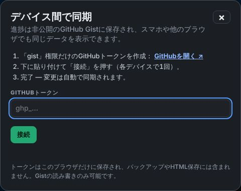
トークンはこのブラウザにだけ保存されます。Backup JSON、Save HTML、Gistには決して含まれません。トークンは誰とも共有しないでください。
同期は任意です。使わなくても、データはこのブラウザに自動で保存されます。
バックアップとコピー
- Backup JSON：プランと設定を含むすべてのデータをダウンロード。
- Import：バックアップを復元（無効なファイルは何も変えずに拒否されます）。
- Save HTML：データ入りのアプリのコピーをダウンロード。
08スマートフォンで
スマートフォンとタブレットでもすべて使えます。違いは次のとおりです：
- カンバンは横にスクロールし、1度に1リスト、下に点が出ます。
- 間隔反復のプレビューにはトピックの選択があり、計画の項目をタップするとその曲線が出ます。
- Planタブは1日ずつ表示し、日付の帯から選びます。エネルギーはシンプルなメニューになります。
- 時間ブロックでは開始、次に終了をタップ。ダイアログは下から開きます。
- グラフはタップやドラッグで値を読め、ページのスクロールを妨げません。
- 上部の本のアイコンでこのガイドを開きます。
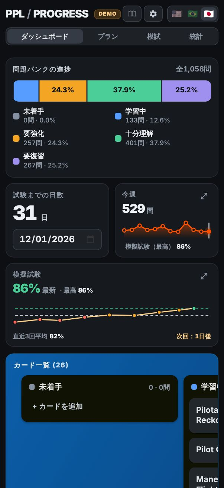
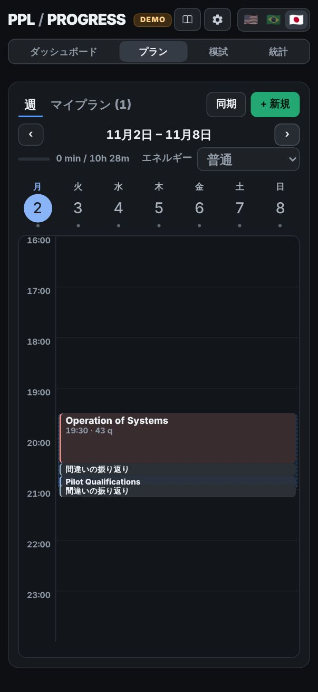
09数値の計算方法
1つの統計エンジンがすべての画面を動かしているので、同じ数値はどこでも同じです。アプリの「How it is calculated」に完全な式があります。
模試の傾向では、予測は100%まで伸び続けず、最後の模試のあとで緩やかになります。
10背景にある科学
各統計の意味、その式、そして根拠となる研究です。アプリを使うのに必要ではありませんが、数値を信頼する（あるいは疑う）ための材料としてまとめました。
記憶は薄れ、復習がその速さを抑える
学習直後はほぼすべて覚えていますが、その後記憶は急速に落ち、次第にゆっくり落ちていきます。これが忘却曲線で、1885年にエビングハウスが初めて測定しました。後の研究で、単純な指数関数よりもべき乗則のほうがよく当てはまることが示されています。アプリはFSRSスケジューラのべき乗則の曲線を使います：
中心となるのは安定度です。良い学習のたびにSが増え、曲線がなだらかになり、次の復習まで長く待てるようになります。これが間隔効果です：同じ学習時間でも、分散させたほうが一夜漬けよりはるかに長く記憶に残ります。各学習はテストでもあり、答えを思い出すことは読み直すよりも記憶を強くします（テスト効果、検索練習）。
復習のタイミング。Rが復習ポイント（初期値90%、設定で変更可）まで下がるとトピックは復習の時期になります。R = 0.9を解くと間隔が求まります：
復習ポイントを上げると間隔が短くなり復習が増え、下げると復習が減り、その間の忘却が増えます。
記憶から予想スコアへ
FAAの問題は3択です。覚えているトピックは最新スコアの水準で正解し、忘れていても推測で約3問に1問は正解します。そのため、あるトピックで正解する確率は両者の混合になります：
試験の60問は、問題バンクの各トピックの問題数にほぼ比例して出題されるので、予想スコアは加重平均です：
合格の確率。すべての問題で正解の確率が同じμなら、60問中の正解数は二項分布に従います。しかしμ自体も推定値であり、アプリはそのずれの大きさ（実際の模試との誤差）を知っています。そこで、μが正確だとみなす代わりにその不確かさで確率を広げるベータ二項分布を使います。合格は60問中42問（70%）、初期設定の目標は60問中51問（85%）です：
「復習をやめた場合」は、それ以上学習せずにすべての曲線が下がったとして、試験日に同じ計算をします。今日のスコアとこの線との差が、復習が守っているものです。
模試と組み合わせた予測
模試は全体を直接測りますが、1回ごとにばらつきがあります。予測は直近3回の模試を指数的に減衰する重みで平均します：模試の重みは10日ごとに半分になります（半減期、設定で変更可）。その平均を問題バンクのモデルμと組み合わせるので、1日の好不調で予測が大きく揺れません。
傾向はスコアを通る最小二乗法の直線です。上限に近づくとスコアは頭打ちになるため、予測は100%まで伸び続けず、最後の模試のあとで緩やかになります。モデルの精度のグラフは、各模試の日に問題バンクのモデルが予測した値と実際のスコアを比べます。
プランが学ぶ内容を決める方法
各トピックには優先度が付きます：試験日にまだ何点取れる余地があるか、復習がどれだけ急ぎか、問題にどれだけ時間がかかるか。
ブロックを埋めるのはナップサック問題です：合計時間がブロックに収まり、合計の価値（守れる問題数）が最大になるトピックを選びます。アプリはブロックごとに厳密に解き、集中力が最も高い最初に最も難しいトピックを置きます。
間違いの振り返り。問題を間違え、その理由を学ぶことは最も効果的な学習法の1つで、間違いの直後にフィードバックがあるとさらに効果的です。そのため各トピックのすぐ後に、そのトピックで予想される間違いに比例した長さの振り返りが入ります。別の日ではなく、同じブロックの中で行います。
ディープワークと計画（カル・ニューポート）
プランはカル・ニューポートの『Deep Work（大事なことに集中する）』と、彼のタイムブロック計画法の考え方に沿っています：
- タイムブロック計画。学習を始める前に、すべての時間に役割を与えます。Planタブはタイムブロックのプランナーです：まずブロックを確保し、それから各ブロックに入れる内容を決めます。
- 切り替えより集中。話題を切り替えるたびに「注意の残留」が生まれ、心の一部が前の作業に残ります（Leroy, 2009）。ディープワークの上限により、1ブロックは約45分ごとに1トピックまでです。
- 難しいことから。最も負荷の高いトピックが各ブロックの最初に来て、その日のエネルギーで提案の量と順番が変わります。
- 計画と実績。週の表示には計画時間、実績、逃したブロックが出ます。逃したトピックは次回優先されますが、プランが勝手に書き換わることはありません：決めるのはあなたです。
- 週の計画。金曜日以降、来週のプランがなければアプリが計画を促します。週を即興ではなく意図をもって始めるためです。
- 主導権はあなたに。カンバンは、Sync with Kanbanで承認するまで何も動きません。
最も失点の多いトピックを、学習ごとの明確な目標と素早いフィードバックとともに練習することは、意図的練習（Ericsson et al., 1993）の核心でもあります。
参考文献と関連資料
- Ebbinghaus, H. (1885). Memory: A Contribution to Experimental Psychology. 全文
- Wixted, J. T., & Ebbesen, E. B. (1991). On the form of forgetting. Psychological Science, 2(6), 409–415. doi
- Open Spaced Repetition. FSRS: the algorithm. GitHub wiki
- Cepeda, N. J., Pashler, H., Vul, E., Wixted, J. T., & Rohrer, D. (2006). Distributed practice in verbal recall tasks: A review and quantitative synthesis. Psychological Bulletin, 132(3), 354–380. doi
- Roediger, H. L., & Karpicke, J. D. (2006). Test-enhanced learning: Taking memory tests improves long-term retention. Psychological Science, 17(3), 249–255. doi
- Metcalfe, J. (2017). Learning from errors. Annual Review of Psychology, 68, 465–489. doi
- Ericsson, K. A., Krampe, R. T., & Tesch-Römer, C. (1993). The role of deliberate practice in the acquisition of expert performance. Psychological Review, 100(3), 363–406. doi
- Leroy, S. (2009). Why is it so hard to do my work? The challenge of attention residue when switching between work tasks. Organizational Behavior and Human Decision Processes, 109(2), 168–181. doi
- Newport, C. (2016). Deep Work: Rules for Focused Success in a Distracted World. Grand Central. calnewport.com
- Newport, C. Time-block planning. timeblockplanner.com
- 概念：忘却曲線 · 間隔効果 · テスト効果 · 二項分布 · ベータ二項分布 · 指数重み付け · 最小二乗法 · ナップサック問題
- FAA. Private Pilot – Airplane Airman Certification Standards. faa.gov
個人の学習ツールであり、FAAやSporty'sとは関係ありません。予測は推定であり、保証ではありません。